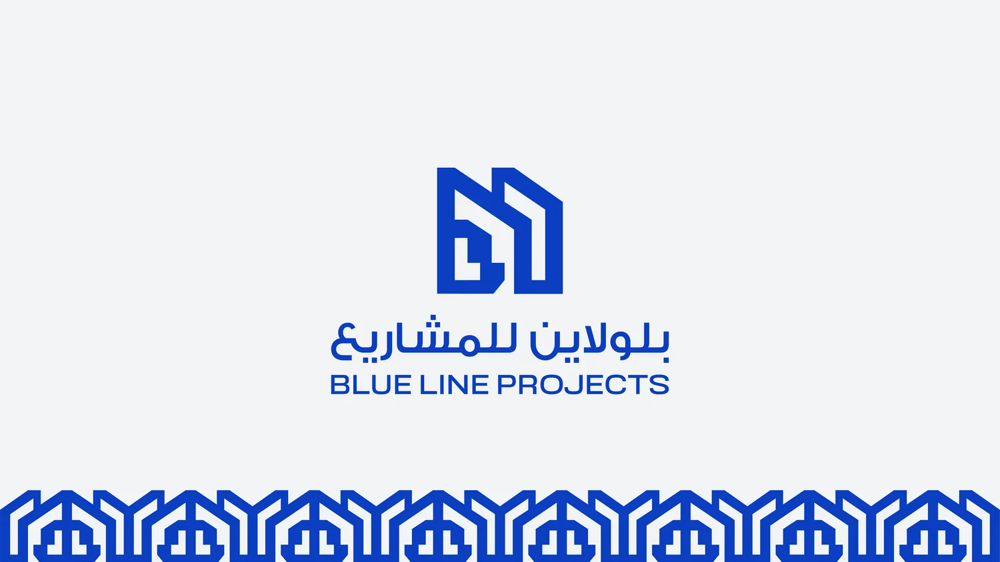
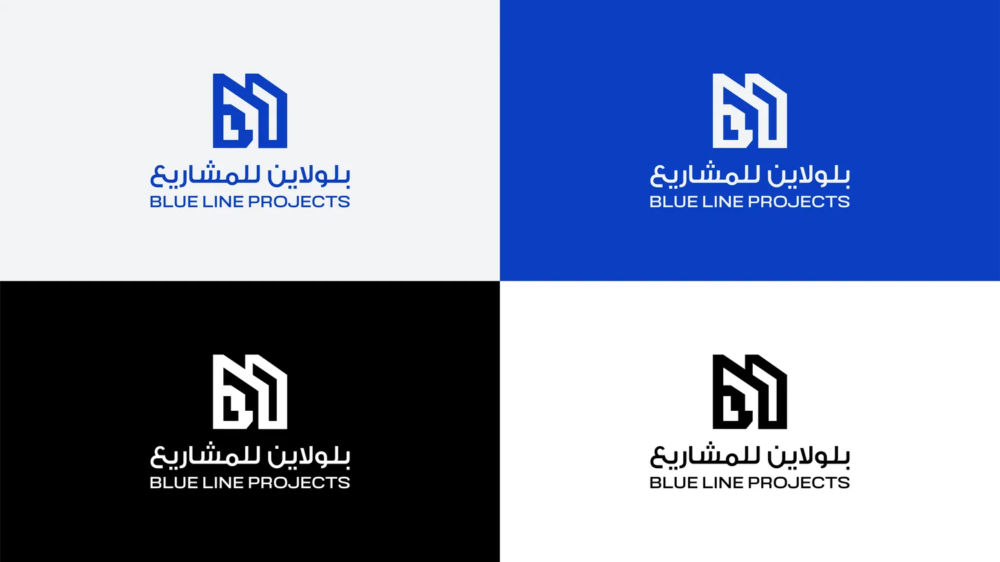
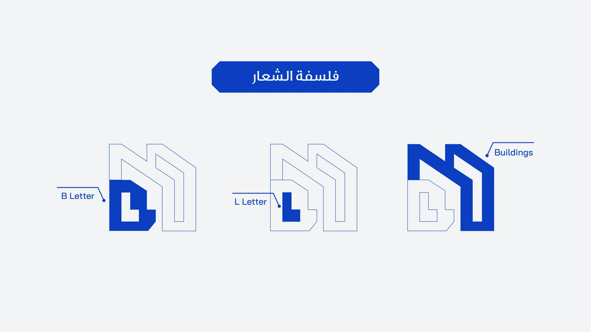
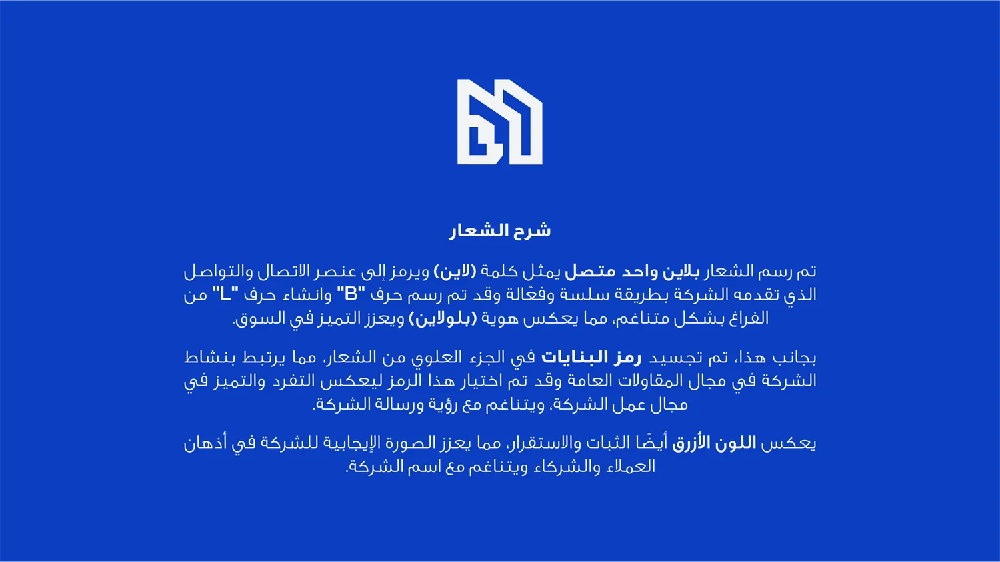
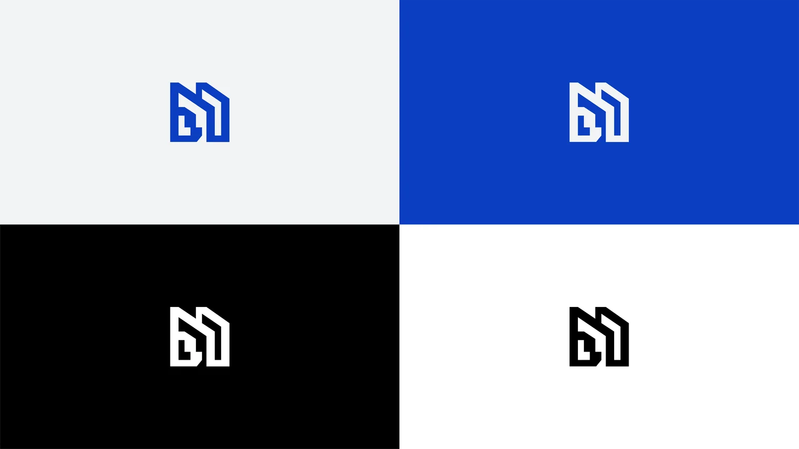
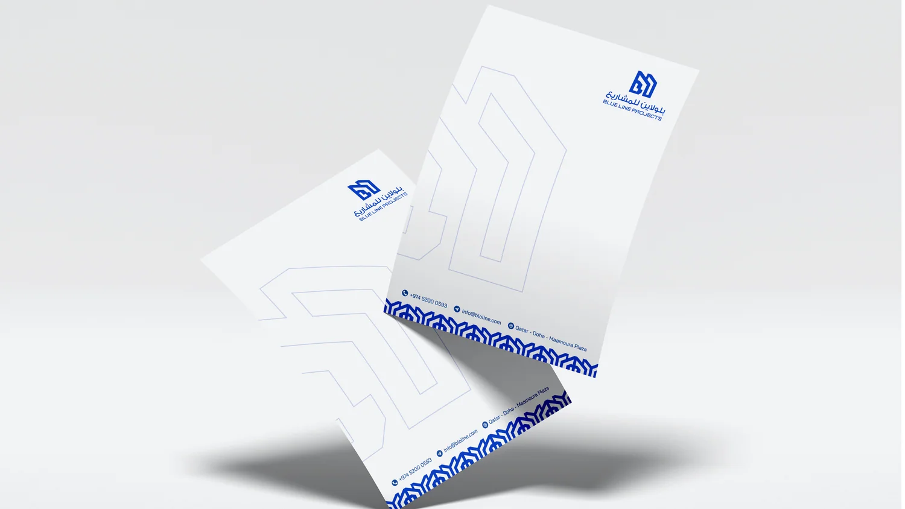
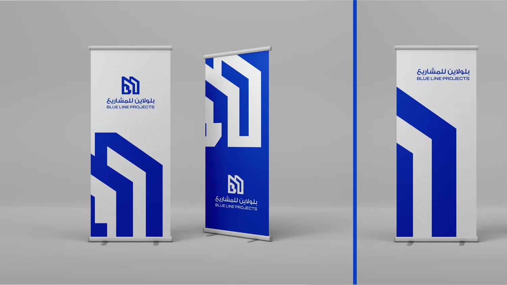
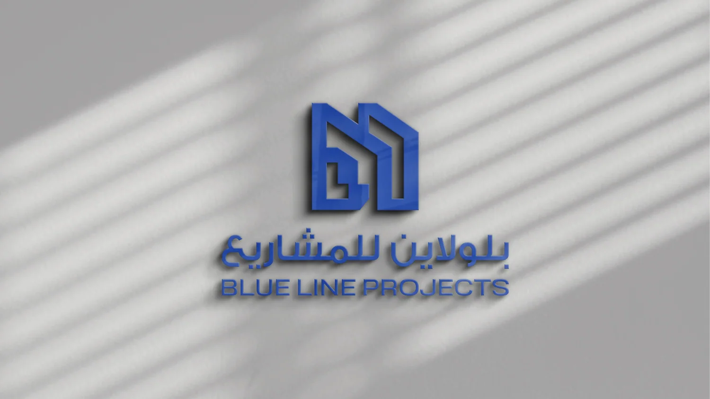

Blue Line Projects
بلولاين للمشاريع
هوية قائمة على خط واحد متصل يرسم حرفي B وL، ويشكّل في الوقت نفسه ملامح المباني. ويعكس الأزرق الثبات والاستقرار في مجال المقاولات.
- الخدمات
- هوية بصرية وشعار
- المجال
- مقاولات عامة
- الدولة
- قطر
هوية بصريةشعارباترنمطبوعات مؤسسية

02Blue Line Projects
03Blue Line Projects
04Blue Line Projects
05Blue Line Projects
06Blue Line Projects
07Blue Line Projects
08Blue Line Projects
09Blue Line Projectsمصطفى عبدالرازق أحمد